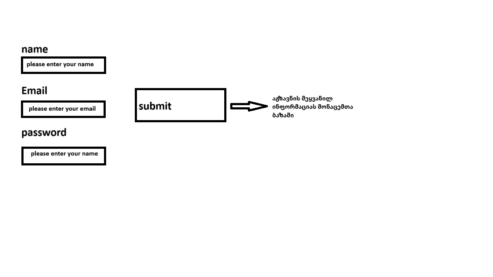

<!--   2) paint-ის გამოყენებით დახატეთ, თუ რა ხდება ფორმის დადასტურების შემდეგ -->


 <!-- 3) კომენტარებით ახსენით რა არის required და placeholder ატრიბუტები --> 
<!-- required ატრიბუტი: ნიშნავს, რომ ამ ველის შევსება სავალდებულოა. -->
 <!-- თუ მომხმარებელი ცარიელს დატოვებს, ფორმა არ გაიგზავნება. -->
 <!-- placeholder ატრიბუტი: აჩვენებს მოკლე ტექსტს ველში (input-ში),  -->
 <!-- რომელიც მიანიშნებს მომხმარებელს, რა უნდა ჩაწეროს. -->

 <!-- 4) შექმენით ფორმა 3 input-ით. მომხარებელს შემოატანინეთ სახელი, ემაილი და პაროლი. input-ების შევსება უნდა იყოს აუცილებელი. თითოეულ input-ს აუცილებლად გაუწერეთ label-ი -->
 <form>
    <label for="name">სახელი:</label>
    <input type="text" id="name" name="name" required placeholder="თქვენი სახელი">
    <br><br>
  
    <label for="email">ემაილი:</label>
    <input type="email" id="email" name="email" required placeholder="თქვენი ემაილი">
    <br><br>
  
    <label for="password">პაროლი:</label>
    <input type="password" id="password" name="password" required placeholder="შეიყვანეთ პაროლი">
    <br><br>
  
    <button type="submit">გაგზავნა</button>
  </form>
